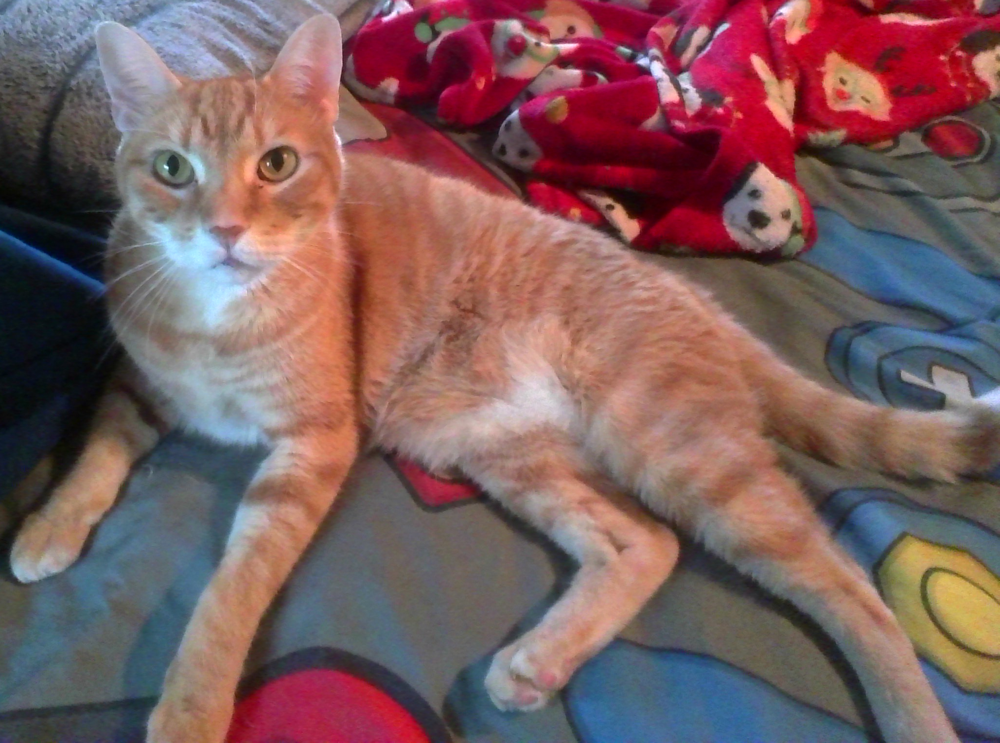
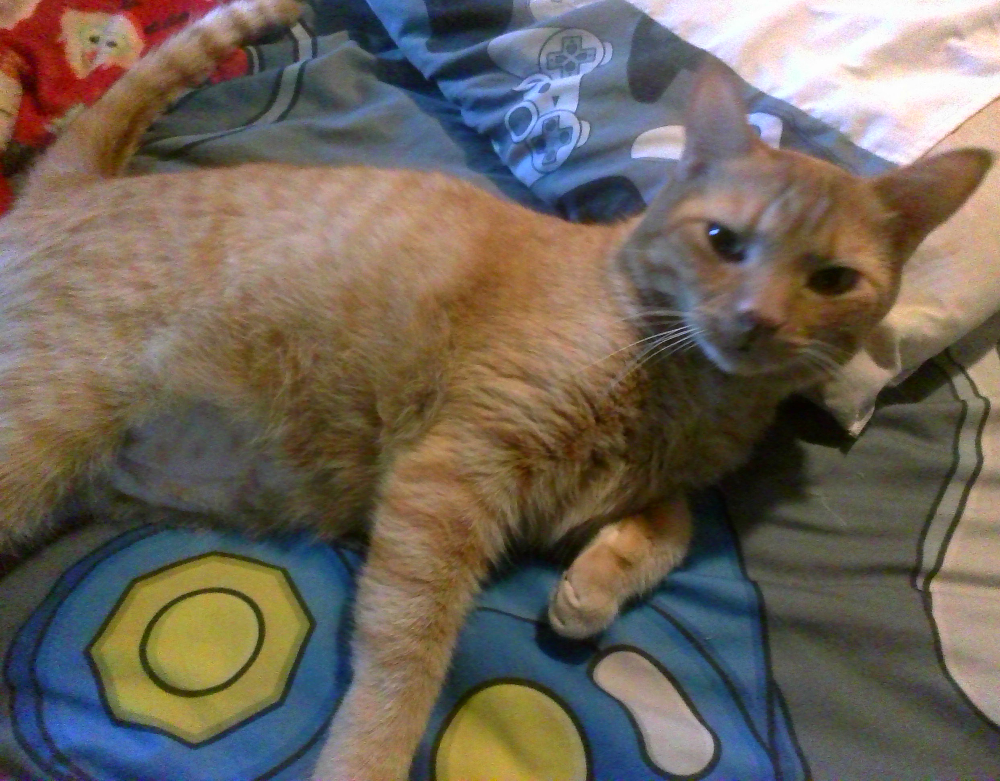
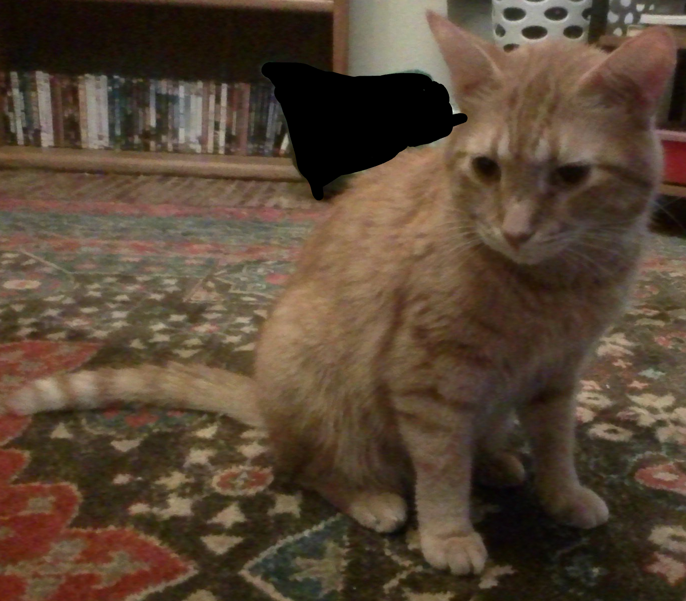
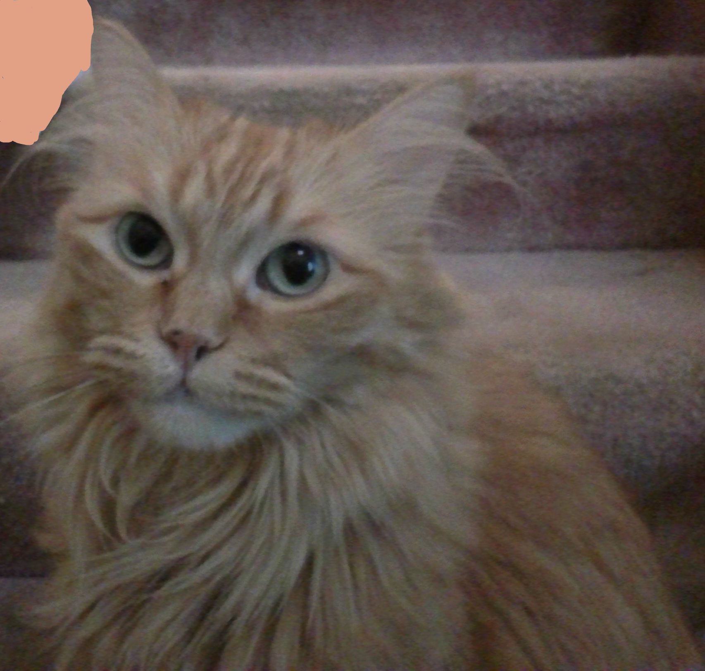
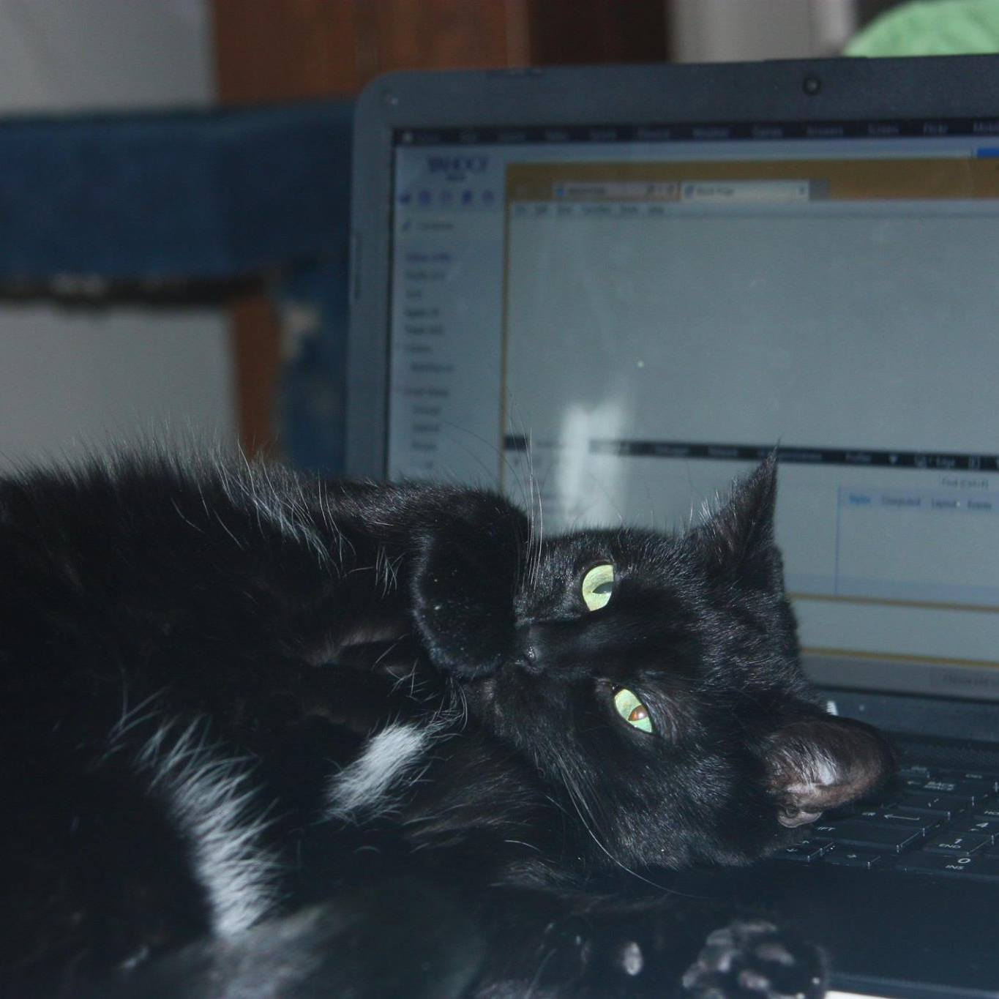
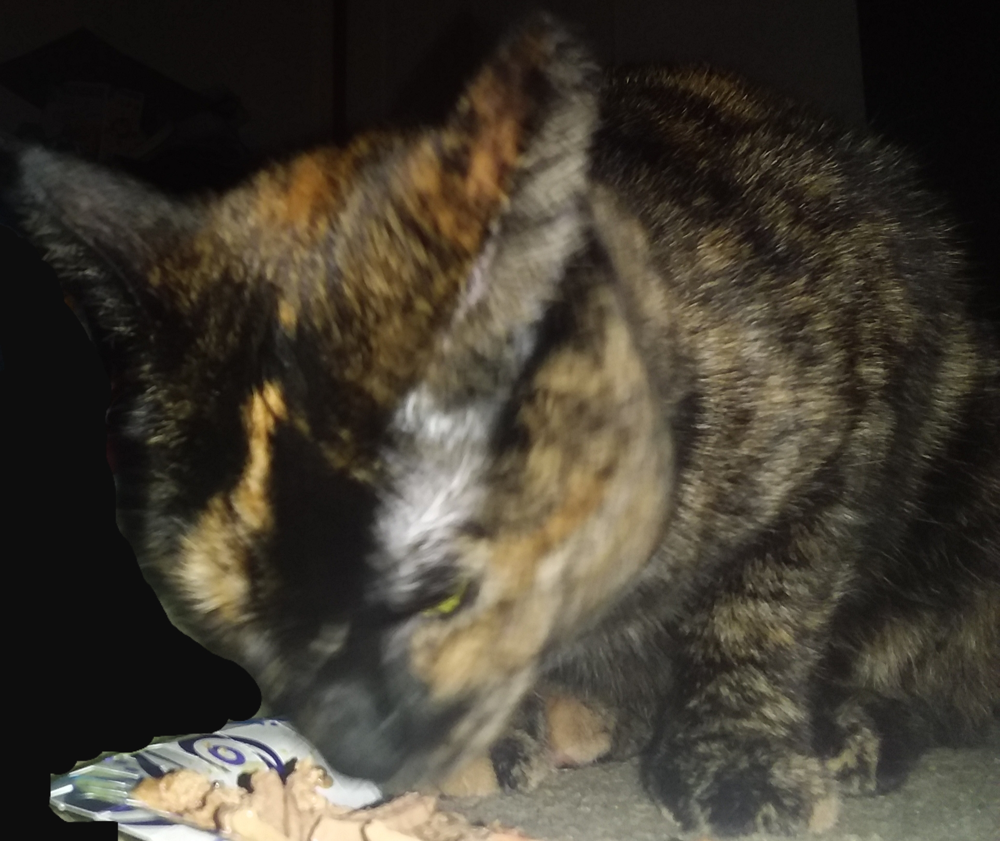
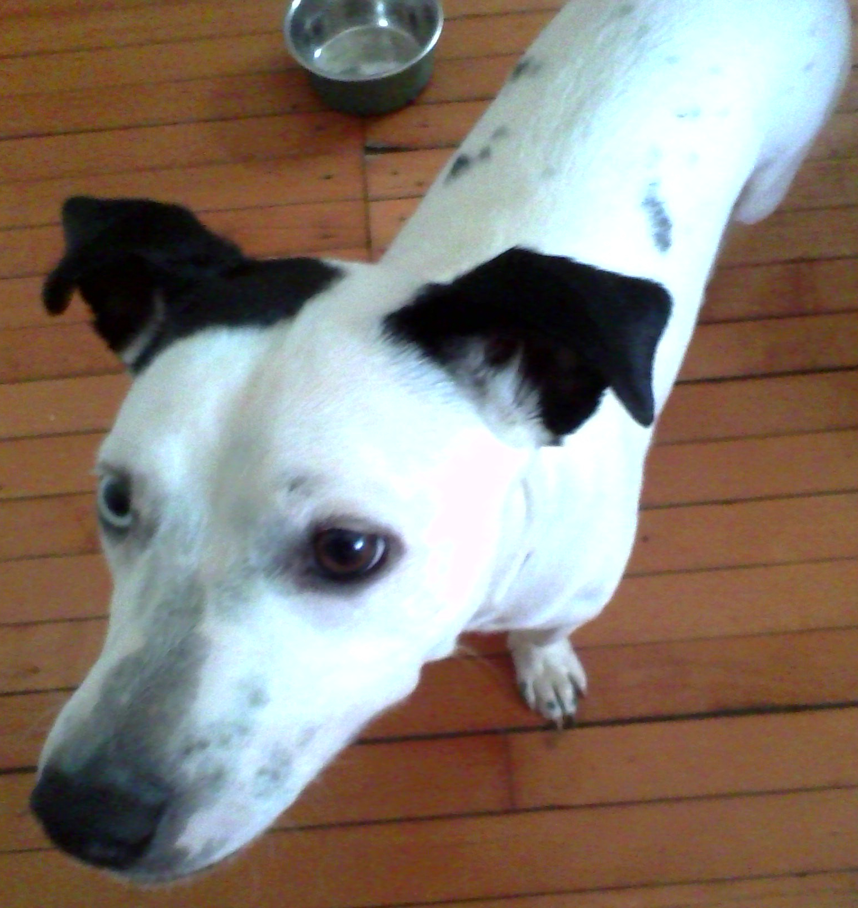

Anakin Baldcok
baldock.a@stu.janesville.k12.wi.us
I am from Edison Middle School, I love animals, I have 3 sistors, I have 6 cats and 1 dog, and love playing games.
My Classes
- Global Studies
- PLTW Intro-Engineer and Desing
- AS Culinary Arts
- Web Desing
- Algebra
- Biology
- English
- Core Physical Education
- Avatar the Last Airbender
- Legend of Korra
- Demon Slayer
- Saiki K
- The Promised Neverland
My Pets







“Until one has loved an animal, a part of one's soul remains unawakened.” -Anatole France
I love the book series wings of fire.